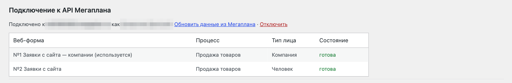
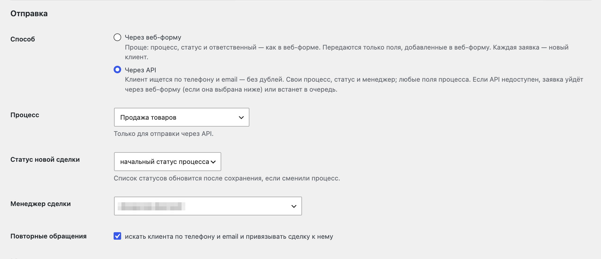
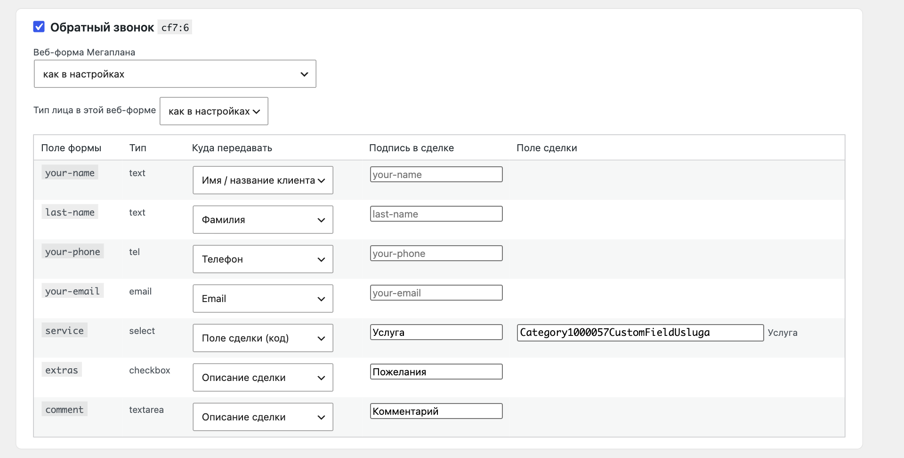
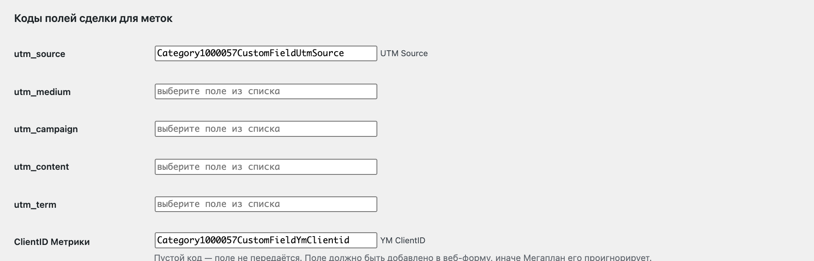

Лидомост · инструкция · версия 0.5
Лидомост: заявки с сайта в Мегаплан
Каждая заявка из Contact Form 7, Elementor Pro или WPForms становится сделкой в Мегаплане — с контактами клиента, полями формы, UTM-метками и ClientID Яндекс Метрики. Настройка занимает 10–15 минут.

1.Создайте веб-форму в Мегаплане
Веб-форма — это адрес в Мегаплане, на который плагин отправляет заявки. Она нужна для простого способа отправки и как запасной путь, если вы выберете отправку через API.
- В Мегаплане откройте Настройки → Интеграции → Глобальные → Формы и нажмите Новая форма.
- Выберите результат Процесс, тип лица (Человек для частных клиентов или Компания), тип контакта, схему процесса и этап.
- В конструкторе перетащите в форму поля, которые будете заполнять с сайта: имя или название, телефон, email, описание и нужные поля сделки.
- Откройте вкладку Настройки формы, снимите галочку «Капча» и сохраните.
Капча должна быть выключена. Новая веб-форма создаётся с включённой капчей, и тогда Мегаплан отклоняет все заявки, отправленные с сервера. Плагин подскажет об этом в журнале, но лучше выключить сразу.
2.Установите плагин
- В WordPress откройте Плагины → Добавить новый → Загрузить плагин и выберите архив
lidomost.zip. - Нажмите Активировать. В меню слева появится раздел Мегаплан с пунктами «Журнал», «Формы» и «Настройки».
3.Подключите API Мегаплана
Шаг необязательный, но с ним настройка проще: веб-формы и поля сделки выбираются из списка, а плагин сам предупреждает о капче и отключённых формах.
- Откройте Мегаплан → Настройки в WordPress.
- В блоке «Подключение к API Мегаплана» укажите адрес аккаунта (например,
company.megaplan.ru), логин и пароль сотрудника, которому видны настройки веб-форм. - Нажмите Подключить.
Пароль не сохраняется: плагин один раз получает токен доступа и дальше обновляет его сам. Отключить доступ можно в любой момент ссылкой «Отключить». Заявки продолжат уходить через веб-форму.

4.Выберите способ отправки
В разделе Отправка на странице настроек выберите, как заявка попадёт в Мегаплан. Раздел появляется после подключения API.
| Через веб-форму | Через API | |
|---|---|---|
| Повторное обращение клиента | Каждая заявка — новый клиент | Клиент ищется по телефону и email, сделка привязывается к нему |
| Процесс, статус, менеджер | Как в настройках веб-формы | Выбираются в плагине |
| Поля сделки | Только добавленные в веб-форму | Любые поля процесса |
| Нужен API | Нет | Да |
| Если Мегаплан недоступен | Очередь повторов | Отправка через веб-форму, затем очередь повторов |
Телефон сравнивается по цифрам, поэтому 8 (912) 555-44-01 и +79125554401 — один и тот же клиент. Карточку найденного клиента плагин не меняет, а что посетитель указал в форме, записывает первой строкой описания сделки.

Ниже в настройках выберите веб-форму из списка. При отправке через веб-форму тип лица подставится из неё сам. При отправке через API укажите, кем создавать новых клиентов: человеком или компанией.
5.Настройте поля форм сайта
Откройте Мегаплан → Формы. Плагин находит формы Contact Form 7, виджеты «Форма» Elementor Pro (на страницах, в попапах и шаблонах) и формы WPForms.
- Отметьте галочкой формы, заявки из которых нужно передавать.
- Для каждого поля выберите, куда оно идёт: имя или название клиента, фамилия, телефон, email, описание сделки или поле сделки. Назначение угадывается автоматически, проверьте его.
- В колонке Подпись в сделке задайте понятные названия. У Contact Form 7 нет подписей полей, и без этого в сделке будут технические имена вроде
your-message. - Чтобы передать поле в поле сделки, выберите «Поле сделки» и укажите его в списке справа.

Если у формы на сайте должна быть своя веб-форма Мегаплана (например, отдельная для юрлиц), выберите её в карточке этой формы.
6.Передавайте UTM-метки и ClientID
Плагин запоминает UTM-метки, страницу входа, источник перехода и ClientID Яндекс Метрики на 90 дней. Если посетитель пришёл по рекламе, а заявку оставил через неделю, метки всё равно попадут в сделку. Это работает и с кешированием страниц.
По умолчанию метки записываются в описание сделки. Чтобы получить их в отдельных полях (для отчётов и фильтров в Мегаплане):
- В Мегаплане откройте схему процесса (Настройки → Бизнес-процессы → Схемы процессов), нажмите Добавить свойство и создайте поля типа «Строка»: UTM Source, UTM Medium, UTM Campaign, ClientID — какие нужны.
- Если отправляете через веб-форму, добавьте эти поля в веб-форму.
- В WordPress на странице Мегаплан → Настройки в блоке «Коды полей сделки для меток» выберите поля из списка.

7.Цель Метрики и страница «Спасибо»
В блоке «Яндекс Метрика» укажите идентификатор цели — плагин отправит её после успешной отправки формы. Номер счётчика определяется автоматически. Если нужна отдельная страница благодарности, укажите её адрес в поле «Страница „Спасибо“».
8.Журнал и повторная отправка
Все заявки видны в Мегаплан → Журнал: статус, форма, контакты, источник, номер сделки со ссылкой и способ отправки. В подробностях — полный запрос в Мегаплан и его ответ.

- Если Мегаплан недоступен, заявка встаёт в очередь и отправляется повторно через 5 минут, 15 минут, 1 час, 3 часа и 12 часов.
- Если все попытки не удались, на email из настроек придёт одно письмо с данными заявки.
- Кнопка «Отправить повторно» отправляет заявку с текущими настройками, например после того как вы выключили капчу.
- Письмо с формы сайта уходит как обычно, что бы ни ответил Мегаплан, — заявка не потеряется.
Срок хранения журнала и запись IP-адресов посетителей настраиваются в блоке «Журнал и уведомления».
Частые проблемы
- В журнале «В веб-форме Мегаплана включена капча»
- Выключите капчу в настройках веб-формы (шаг 1) и нажмите «Отправить повторно» у заявки.
- Клиент в Мегаплане создаётся без имени или заявка отклоняется с ошибкой клиента
- Тип лица в плагине не совпадает с типом лица веб-формы. Подключите API — тип определится сам — или выберите его вручную.
- Поле сделки не заполняется при отправке через веб-форму
- Мегаплан молча пропускает поля, которых нет в веб-форме. Добавьте поле в конструкторе веб-формы или используйте отправку через API.
- Повторные отправки из очереди задерживаются
- Очередь работает через WP-Cron, а он запускается при заходах на сайт. На сайте с небольшой посещаемостью настройте системный cron на хостинге.
- В сделке технические имена полей
- Задайте подписи в колонке «Подпись в сделке» на странице «Формы».
Требования
- WordPress 5.8 и новее, PHP 7.4 и новее.
- Contact Form 7, Elementor Pro или WPForms (Lite или Pro).
- Облачный или коробочный Мегаплан с веб-формами; для API — сотрудник с доступом к настройкам.
- Глобальные виджеты Elementor не поддерживаются. У WPForms цель Метрики и страница «Спасибо» срабатывают при отправке через AJAX — она включена по умолчанию.